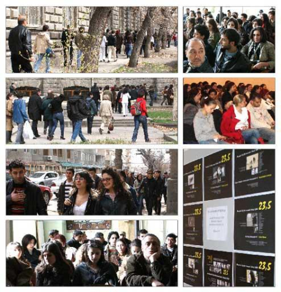
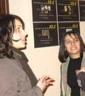
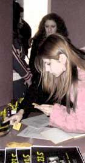

«23,5» ФЕСТИВАЛЬ ТУРЕЦКИХ ФИЛЬМОВ В АРМЕНИИ



Армянская аудитория
приветствовала
и полюбила фестиваль
Идея фестиваля родилась в январе 2008, на проекте «Шаг к диалогу», во время которого турецким участникам был воспрещен въезд в Армению.
Название фестиваля отсылает к одной из редакторских колонок турецкого журналиста Гранта Динка.
Цель фестиваля - посредством знакомства с современными короткометражными фильмами (документальными, художественными, анимационными, экспериментальными), посредством знакомства с авторами и их видением - поощрить интерес армянской аудитории к соседней Турции.
Миссия фестиваля - утверждение толерантности и диалога через преодоление стереотипов и узости мышления.
Фильмы первого фестиваля были отобраны с помощью наших коллег в Турции из архивов Фестиваля на колесах (Карс, 2007) и Стамбульского фестиваля короткометражных фильмов.
Армянское жюри, составленное из 12 слушателей школы по правам человека, в возрасте от 14 до 20 лет, осуществило окончательный отбор, и на основе консенсуса составилo программу фестиваля, включив в нее 7 фильмов различного жанра. Обладатель Гран-при фестиваля был определн по результатам зрителького голосования.
Фильмы второго фестиваля были отобраны из 77 заявок турецких кинематографистов, поступивших по открытому конкурсу. Армянское жюри выбрало из них 10 фильмов, которые были представлены на суд зрителя.
Фестиваль стартовал 13 марта 2009, в Ереване. Открытие было предусмотрено провести в Институте тетра и кино, но возникли определенные проблемы (за полчаса до начала просмотра было отключено электричество в здании, по объяснению администрации, это произошло по техническим причинам). Поэтому фестиваль был перенесен на новое место - культурный центр «Кенац Тун» («Дом Жизни»). Собравшиеся на просмотр зрители, в большинстве студенты, прошлись вместе пешком до «нового дома» фестиваля. Фестиваль был продолжен в Государственном университете (17 марта), в кинотеатре «Москва» (19, 20, 21 марта). Позже было организовано еще 4 дополнительных просмотра в НПО и образовательных центрах.
«Приз зрительских симпатий» - единственная номинация фестиваля. Зрители с большой ответственностью отнеслись к процессу голосования. Фильм - победитель был объявлен на фестивале-2010. Дениз Джейхан автор фильма, набравшего наибольшее количество голосов, была приглашена в Ереван на церемонию вручения приза.
Армянская аудитория приветствовала и полюбила фестиваль.
Название фестиваля отсылает к одной из редакторских колонок турецкого журналиста Гранта Динка.
Цель фестиваля - посредством знакомства с современными короткометражными фильмами (документальными, художественными, анимационными, экспериментальными), посредством знакомства с авторами и их видением - поощрить интерес армянской аудитории к соседней Турции.
Миссия фестиваля - утверждение толерантности и диалога через преодоление стереотипов и узости мышления.
Фильмы первого фестиваля были отобраны с помощью наших коллег в Турции из архивов Фестиваля на колесах (Карс, 2007) и Стамбульского фестиваля короткометражных фильмов.
Армянское жюри, составленное из 12 слушателей школы по правам человека, в возрасте от 14 до 20 лет, осуществило окончательный отбор, и на основе консенсуса составилo программу фестиваля, включив в нее 7 фильмов различного жанра. Обладатель Гран-при фестиваля был определн по результатам зрителького голосования.
Фильмы второго фестиваля были отобраны из 77 заявок турецких кинематографистов, поступивших по открытому конкурсу. Армянское жюри выбрало из них 10 фильмов, которые были представлены на суд зрителя.
«Приз зрительских симпатий» - единственная номинация фестиваля. Зрители с большой ответственностью отнеслись к процессу голосования. Фильм - победитель был объявлен на фестивале-2010. Дениз Джейхан автор фильма, набравшего наибольшее количество голосов, была приглашена в Ереван на церемонию вручения приза.
Армянская аудитория приветствовала и полюбила фестиваль.
Особая благодарность:
Дениз Бетил
Али Бетил
Атилла Дурак
Мурат Мусуоглу
Наиф Алибейоглу, бывший мэр Карса
Башак Эмре, директор "Фестиваля на колесах"
Арцрун Апресян
Анна Аветисян
НПО "Кенац Тун"
Грант Аванесян и кафедра общей психологии ЕГУ
НПО "Чаренцаван"
Видеоцентр образовательного комплекса
М. Себастаци
Женский ресурсный центр
Данс Булушма Истамбул, танцевальная студия
Арис Налчи, газета "Агос"
Организатор: Кавказский Центр Миротворческих Инициатив
Финансовая поддержка: Посольство Британии в Армении
Дениз Бетил
Али Бетил
Атилла Дурак
Мурат Мусуоглу
Наиф Алибейоглу, бывший мэр Карса
Башак Эмре, директор "Фестиваля на колесах"
Арцрун Апресян
Анна Аветисян
НПО "Кенац Тун"
Грант Аванесян и кафедра общей психологии ЕГУ
НПО "Чаренцаван"
Видеоцентр образовательного комплекса
М. Себастаци
Женский ресурсный центр
Данс Булушма Истамбул, танцевальная студия
Арис Налчи, газета "Агос"
Финансовая поддержка: Посольство Британии в Армении